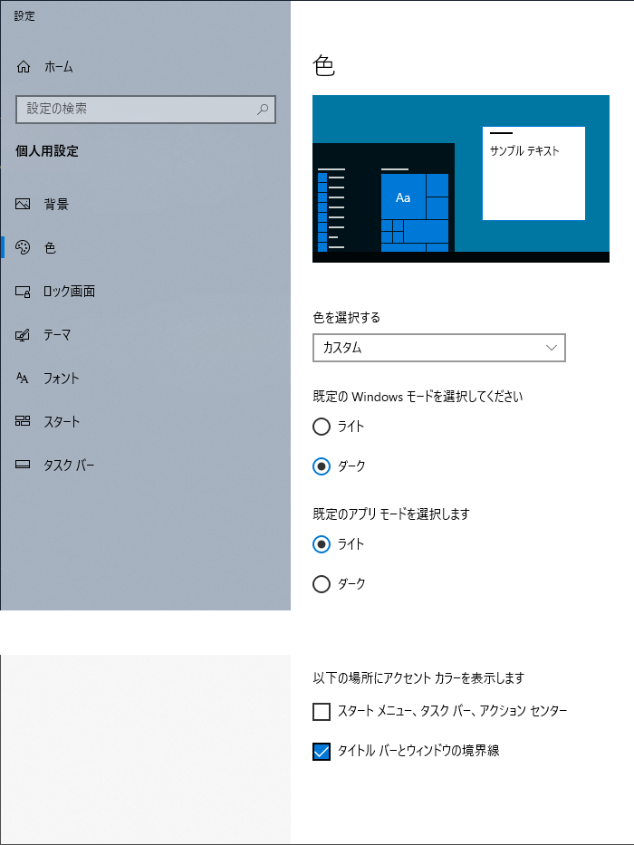

近年、Windowsを「ダークモード」で利用する人も徐々に増えてきました。
有名な(比較的高額・高機能な)ソフトウェアが、ダークモードを搭載していることや、
スマートフォンなどにもダークモードが導入されたことで、少しずつ浸透してきているのでしょう。
このModは「他のアプリとは無関係に天翔記のタイトルバーだけをダークモードっぽくする」というものです。
DarkModeTitleBar.dllを「天翔記フォルダ」へとコピー。
天翔記の話ではなく、OSの設定の話となります。
他アプリも一緒にタイトルバーをダークモードにするならば、このModの導入は必要ありません。
「テーマと関連項目の設定」⇒「色」で設定してください。
一番下にある「タイトルバーとウィンドウの境界線」を設定すれば、Win32アプリもほぼ反映されるかと思います。
